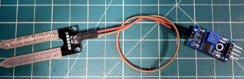

Water my plant based on:
Air Humidity
123 xy
Soil Humidity
123 xy
Temperature
25°C
Light Intensity
3000 lx
Air Humidity Values Over Time
Soil Humidity Values Over Time
Temperature Values Over Time
Light Intensity Values Over Time
Our goal was to design a product that would be practical and well rounded in software and hardware functionality. As UCD Aggies, we were driven toward projects that had to do with sustainability and reusability, which is what led us to building the AggiePlanter. The AggiePlanter can be used by passionate gardeners, curious scientists, or anyone who just wants a bite of fresh produce. AggiePlanter allows users to monitor the health of their plants and make changes accordingly to ensure the plant is thriving, it comes with an automatic watering system as well, for the lazy Aggies out there.
Live remote monitoring for plant health via a website.
Live OLED display on plant for monitoring
Automatic plant watering system (based on user input)
Switch Controlled Watering

A DHT11 sensor module is used to gather temperature and air humidity data. DHT11 uses a single line serial communication to communicate with the CC3200 Launchpad. In order to start communication with DHT11 the data pin is pulled low for at least 18ms and then pulled high for 20-40us. After the start signal is sent, the GPIO pin is set to input mode and sensor data is read using GPIO interrupts and the SysTick timer. DHT11 uses a similar encoding system used in the TV remote from Lab 3. Pulses of 26-28us are 0s and pulses of 70us are 1s. DHT11 sends 40 bits of data to the CC3200 Launchpad. The first 16 bits are humidity values, the second 16 bits are temperature values and the last 8 bits are check sum.
YL-69/YL-38 soil moisture sensor modules are used to detect the moisture of the soil. YL-69 module is inserted into the soil and it detects the moisture level by measuring the resistance between its two sides. YL-38 module contains the circuitry to detect the resistance between the YL-69 prongs and converts the value into an analog DC signal. The output of the YL-38 module is connected to a MCP3001 ADC IC. CC3200 Launchpad connects to the ADC to read sensor data using SPI.
A light dependant resistor (LDR) is used to detect the light intensity. The analog output of the LDR is connected to a MCP3001 ADC IC. CC3200 Launchpad connects to the ADC to read sensor data using SPI.
We designed a peristaltic pump using 3D Printer to deliver water to the plants. Peristaltic pumps work by squeezing a soft tube to create a soft vacuum. This vacuum causes the water to move in whatever direction the pump spins. The pump has 3 main components:
Outer Pump
This part creates a surface where the soft tube can be pressed into. It is a large cylinder with an opening to allow the input and output tubes to enter and exit. The outer pump is screwed into the body of the stepper motor.
Inner Pump (right)
This part contains 3 ball bearings and is attached to the rotor. It spins to create a vacuum inside the soft tube.
Silicone Tube
A silicone tube is used to move the water from the container to the plant. The tube is placed between the inner and outer pump parts. Silicone tubes have excellent flexibility and are soft enough to be used in a peristaltic pump.
Stepper Motor: To run the pump a stepper motor is used. Stepper motors are powerful and have precise control due to the way they operate. It delivers enough power to be able run the peristaltic pump.
Stepper Motor Driver: We used a DRV8834 Stepper Motor Driver circuit to control the motor. It needs 2 signals from the CC3200 Launchpad to operate. The DIR pin on the driver controls the direction of the stepper motor while the STEP function controls the movement. Each time a pulse is sent to the STEP pin, the motor moves 1 step. The speed of the motor can be controlled by changing the pauses between each step signals and the amount of rotation can be controlled with the number of step pulses sent.

The OLED (attached to plant) is used to show users live values of data when they are in physical proximity to the plant. The OLED refreshes as any of the plant’s attributes fluctuate.
This lab utilizes a variety of components and software services, which calls for extensive debugging. Previous labs provided a foundation for working with LaunchPad and AWS communication, certificates, new hardware component implementation using GPIO, Logic Analyzer etc. Aspects of this project we spent time familiarizing ourselves with included: website development and hosting using AWS, interconnecting AWS services, AWS to LaunchPad communication, documentation for new sensors, and the incorporation of a mechanical design in our LaunchPad (water pump).
The challenges we encountered with the software included sending data to our shadow from AWS, which we did not do in any previous labs. This problem was solved by utilizing AWS CloudWatch logs to narrow down our error and then utilizing IAM to ensure proper permissions were given to our Lambda function to post to our shadow, not only read from it. Another issue regarding AWS, was LaunchPad’s inability to connect to the shadow due to an untraceable time defining error. We were only able to get past this error by creating new certificates and attaching them to our IoT shadow object. In graphing the values, we utilized Jupyter Notebooks from AWS Sagemaker, however this was difficult to integrate into AWS Lambda, since there was no way to directly run the notebooks from Lambda. Due to this issue, we were unable to have live data for the graphs that could be updated via the front end. Many of these solutions required AWS purchases, so we included them in our potential ideas.
In order to receive temperature and humidity data from the DHT11 sensor we had to figure out how its single line serial communication worked. Although the format of the received signal was similar to the one in Lab3 remote control data, DHT11 also required a start signal to operate. We used the logic analyzer to determine whether our start signal was successful or not. In our first few trials we were unable to see any signals in the logic analyzer, however once we switched the GPIO pin to an input immediately after the start signal we were able to see the signal. After that we used GPIO interrupts to record the serial data from the sensor. Once we had all the data recorded, we were able to process it to get the values we needed.
While designing the peristaltic pump we tried a few different types of tubing. We purchased vinyl tubing from a hardware store however after some experimentation we concluded that it was not flexible enough. After doing some research online and looking at what commercial peristaltic pumps use for tubing, we decided to order silicone tubing online. Another difficulty we encountered was figuring out the radius of the inner pump. We 3D printed three different inner pumps and used the one that gave the best result.
Despite the challenges, we were able to enhance our final product with the addition of 3D printed mounts for the sensors and OLED display, and a protoboard circuit that contains all the required components (such as Stepper driver, ADC ICs etc.). Software additions included a record/visualization of values collected throughout the day for efficient monitoring and user reference.